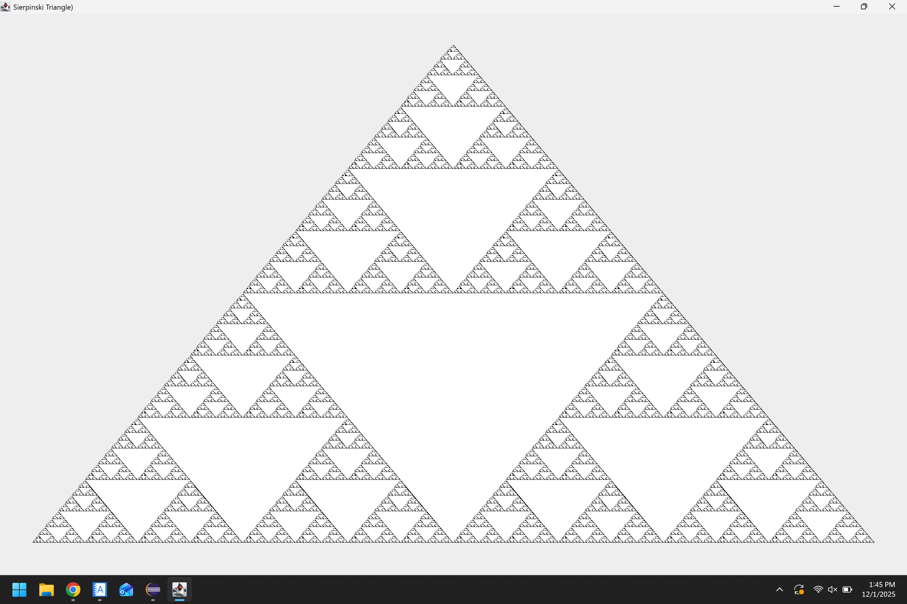
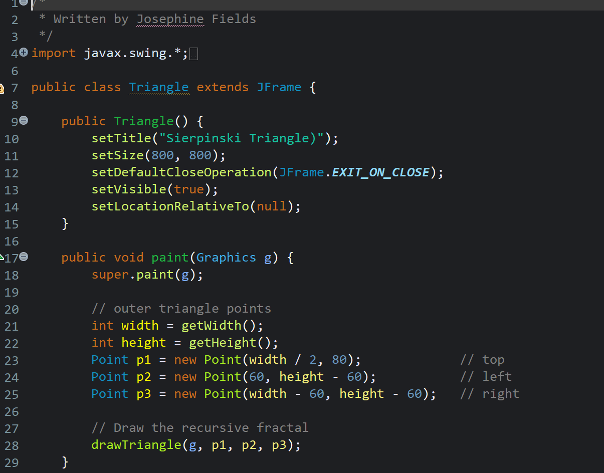
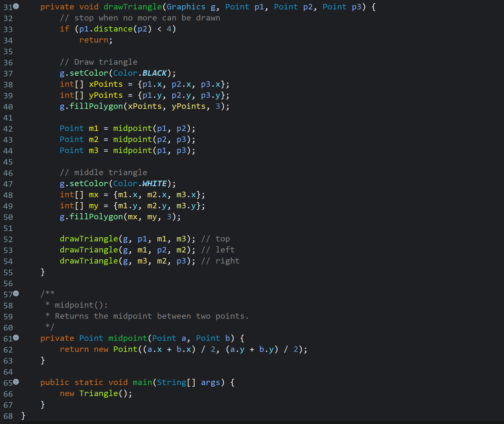

Sierpinski Triangle Simulator: Java-to-Web Architecture Migration - In Progress



A rewrite of an academic desktop application originally built during my freshman year at the University of South Carolina. I am migrating the original program out of a desktop environment and onto the web to introduce responsive, real-time controls.
Architectural Migration Roadmap
- Legacy System (Complete): Evaluated the original Java 17 and JFrame codebase. Documented its contraints inside an Obsidian workspace.
- Math Translation (In Progress): Porting the recursive math from Java into JavaScript. The web engine will calculate the coordinate arrays and draw the triangles onto an HTML5 Canvas.
- The User Interface (In Progress): Buiding a split-screen website layout using HTML and CSS. The next step is adding sliders and color pickers so users can change the fractal depth and colors in real time.
- Architecture Logs (In Progress): Logging every decision choice and bug fix in an Obsidian workspace using ADRs.
Launch Simulation →
View Code and Logs on GitHub →